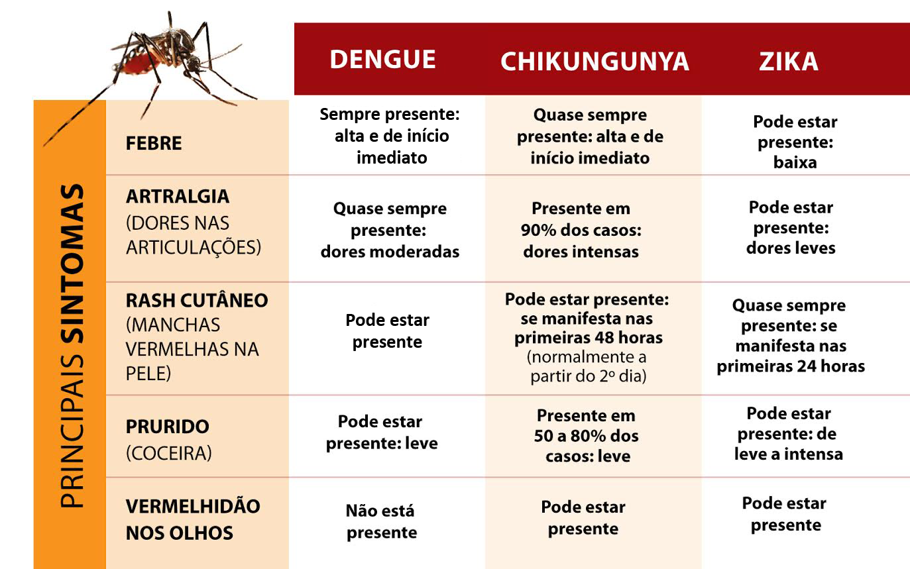

Orientações gerais
Os vírus que causam a dengue, febre de chikungunya e zika vírus são transmitidos pelo mosquito Aedes aegypti. Elas apresentam sinais e sintomas parecidos, mas têm níveis de gravidade diferentes. Não há tratamento específico. Quanto ao zika vírus, foi identificada uma relação entre o vírus e o surgimento de malformações congênitas em gestantes que contraíram a doença. Assim, observe o ambiente em que você vive. Eliminar os criadouros do mosquito ainda é a melhor estratégia para evitar essas doenças.
;